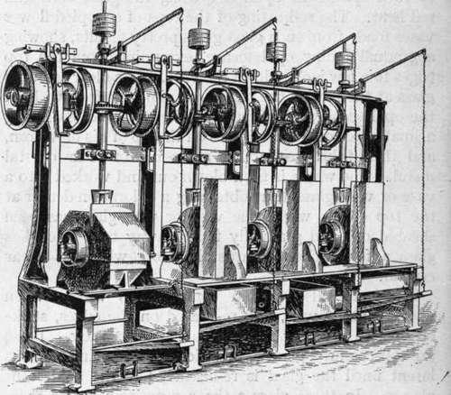

Chapter XV. Decorated Glassware
Description
This section is from the book "Glass And Glass Manufacture", by Percival Marson. Also available from Amazon: Glass and Glass Manufacture.
Chapter XV. Decorated Glassware
Certain methods of decorating glass are carried out whilst the glass is being made by the workmen. Other methods consist in decorating the glass after it has been made, such as cutting, fluting, etching, engraving, and enamelling. In another form of decoration the method consists of a combination of two or more of the above processes. The crystal glass may be cased over with a thin covering of coloured glass by the glass worker, and this outer coloured casing cut through by the glass cutters, exposing and showing through the colourless crystal underneath with very effective results.
A small portion of coloured glass, such as citron green, topaz, blue, or ruby metal is gathered from the pot by an assistant, and the workman, gathering a ball of crystal glass on his blow-iron, allows a portion of the coloured metal held by the assistant to fall or drop upon the ball of crystal. Upon blowing the whole out, the coloured metal is spread as a thin casing upon the outside of the bulb of crystal. This bulb is then worked into a wine-glass or other article, which, after annealing, is sent to the glass cutter, who decorates the outer surface by cutting the glass on his wheel. The colourless glass then shows through against the coloured surface where it has been cut to the pattern, the colour standing out in relief.
In another form of decoration, the workman allows small pear-shaped tears or drops of coloured glass to fall upon the outer surface of a bowl or vase, in equidistant positions round the circumference of the article.
By placing and working the coloured glass into position in this way, some pretty artistic results are obtained, dependent upon the skill and artistic taste of the workmen.
In another method of decoration, certain coloured glasses are used, the composition of which causes them to turn opalescent upon re-heating the glass to a dull red heat. The re-heating of the tops of crimpled flower vases made from such glass gives pretty results, showing a gradual fading opalescence, extending from the top edges to a few inches down the vase, into a clear coloured glass at the foot of the stand. A similar effect, without the opalescence, is obtained by the workman gathering a small piece of coloured glass on the tip of his blow-iron, and then taking a further gathering of clear crystal metal. The whole is then blown out and worked into a vase or wine-glass, thus obtaining a coloration denser at the top edges, where the vase or wine-glass has been sheared off, and gradually fading away to a colourless glass a few inches towards the foot, which is clear crystal.
There are also certain compositions which, when worked into a vase, and re-heated on the edges, strike or turn to a colour such as pale blue or ruby. These are self-coloured glasses, in which the colouring remains latent until the glass is re-heated, like the opalescent glasses. In these glasses the composition is the more essential factor.
Glass cutting is an effective way of decorating glassware. In using this method, the crystal glassware is made fairly heavy and strong, so as to permit of the deep cuttings which refract the light and show up the prismatic patterns so brilliantly.
In cutting glassware, the glass cutter works in front of a rotating disc of iron carried in a frame. This wheel has a bevelled edge upon which a fine jet of sand and water is allowed to drip from a tundish above. The abrasive action of the sand cuts into the glass, and the workman, by holding the glass dish or bowl against the wheel, follows the design or pattern in diagonal lines across the article. These cuttings are recrossed, and the intermediate diamond spaces filled in with lightly cut set patterns, until the whole of the intended design is " roughed " out over the surface of the glass, after which the glass is taken to another frame carrying a stone wheel, which is of much finer abrasive action. This stone wheel smooths the rough cuts done by the previous wheel. After this the cuts are polished successively on a wood wheel and brush with polishing powders, until a smooth and polished cut is obtained.
Machine For Smoothing Bottoms Of Tumblers
As the value of the glass is greatly increased by cutting, only the best and clearest articles of table glass are so treated. The work of cutting becomes technical and expensive, according to the richness of the cutting demanded. The crystal table glass made from lead gives the most brilliancy in cutting. Soda-lime glasses are found to be hard to cut and do not give such brilliant and prismatic effects as the glass made from lead compositions.
An automatic machine for grinding, smoothing, and polishing the bottoms of tumblers, etc., " bottoms " or grinds, smooths, and polishes tumblers at the rate of 2,000 a day. Four vertical revolving wheels are fixed within a frame, one iron, two stone, and one wood. Over each of these is a rotating spindle carrying the tumbler so that the bottom of it is automatically pressed against each vertical wheel in turn. The first wheel does the roughing, the two second the smoothing, and the third the polishing. These machines are simple and require only unskilled labour to operate, and go far towards cheapening production.
Glass engraving and intaglio work is a much lighter and more artistic method of decorating glass than the deep cutting before described. In these processes the glass is cut or ground to a less extent, and a more free treatment of design is possible. Floral ornamentation and natural forms of applied designs can be carried out, and portions may be left rough or polished, according to the effect of light and shade required. The workman, whilst engraving, works before a small copper or metal wheel rotating in a lathe, and uses fine grades of emery or carborundum powders made into a paste with oil, as the abrasive medium. The frame turning these wheels is like a lathe, and may be worked by a foot treadle. The wheels are interchangeable, and an assortment of various sizes, having different bevelled edges, is kept at hand in a case, from which the engraver selects the one most suitable for the particular work to be done.
Continue to:
Tags
glass, manufacturing technology, furnace, glassware, wine glass